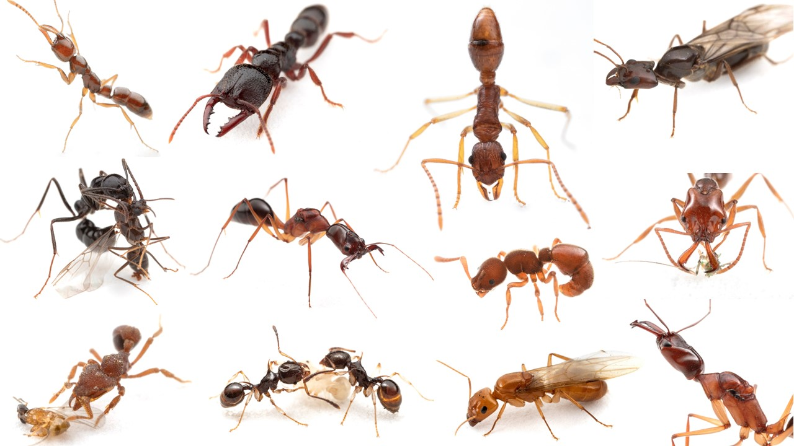
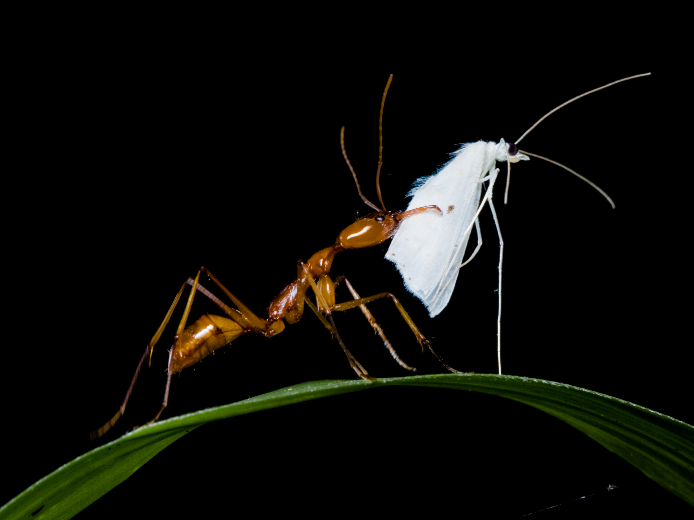
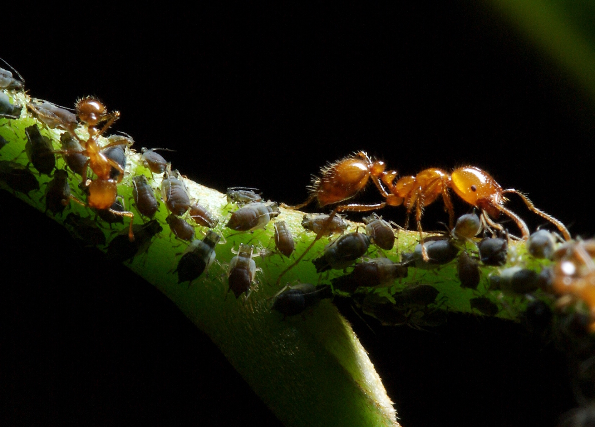

Research
Our research group is interested in the ecological and evolutionary processes that generate biological diversity. We study biodiversity patterns across various spatial scales, using insects as a model group. Majority of our research is focused on the ant fauna of Indo-Australia and Mexico.
Ecology, evolution and diversity of ants
Ants are among of the most ecologically important groups of animals in terrestrial ecosystems thanks to their high abundance, broad range of life strategies and diverse interactions with other organisms. We study their distribution, ecology and evolution in tropical and subtropical environments at the population, species and community levels. Our studies are based on a unique set of ant specimens and data from Melanesia, Australia, and Mexico, gathered by standardized collecting protocols that include a broad range of methods covering ants from leaf litter to forest canopy. Along with our collaborators, we lead a long-term survey of Melanesian ants to create publicly accessible resources combining distributional, morphological, ecological and molecular information. This is exemplified by the Ants of New Guinea database (www.newguineants.org), which is a comprehensive source for studies of Melanesian ants, linked to other major biodiversity resources such as the Barcodes of Life Initiative (www.ibol.org), Antweb (“www.antweb.org) and Antwiki (www.antwiki.org).

Phylogeny, population genetics and biogeography of ants on islands
Using a range of molecular techniques, we aim to reconstruct the evolutionary history of ants to better understand the origin and maintenance of insect diversity across various tropical and subtropical regions. We use species-level phylogenies of ants to study radiation patterns and dispersal across Indo-Australia, South Pacific and Mexico areas. We also use phylogenies to estimate the times of origin, and diversification rates and to reconstruct the evolution of ecological traits across ant lineages. These analyses allow us to evaluate the species’ past and current ecological changes, habitats or whole ecosystems. At the population levels, we study how habitat preferences, life history and geography affect genetic structure and gene flow. We also use population genetic markers to reconstruct the movement of ant populations among islands or across different ecological gradients.
Interactions between ants and other organisms
Ants participate in a wide range of interspecific interactions and are often considered keystone species in tropical ecosystems. In our group we are interested in interactions between ants and myrmecophytic plants as well as in associations between ants and their microbiome. We study associations between myrmecophytic plants in Melanesia, in particular genera Hydnophytum and Myrmecodia (Rubiaceae). These plants create a unique ecosystem for various ants who participate in their protection, nutrition and dispersal. The plants create important nesting habitats for ants in higher altitudes or in coastal mangroves and allow some arboreal ants to dominate large parts of forest canopy. In social insects the microbiome communities have impact on diet, social interactions and possibly on evolution of ecological preferences. We study the patterns of associations between ants and their microbiome across ecological gradients at the population and species levels. The patterns of spatial and population-level host specificity in ant-associated microbiome are mostly unknown. We use ants to evaluate to what extend are associations between various symbiotic microorganisms and their host determined by spatial turnover, diet, climate and other ecological factors.

Introduced ants
Distribution and genetics of non-native ants; impact of invasive species on native ecosystems One of the ongoing threats to ecosystems is the occurrence and spread of non-native species. Our team is documenting non-native ant species and evaluating the risks possessed by invasive ants in Mexico and Papua New Guinea. We are assembling a database of occurrence records and developing resources with information about the biology and control of ants introduced to Mexico. For selected species, we use molecular-genetic methods to reconstruct their invasion history. This research is in collaboration with the Global Ant Biodiversity Informatics (www.antmaps.org) (GABI) initiative and with Conabio, MX (www.conabio.mx).
